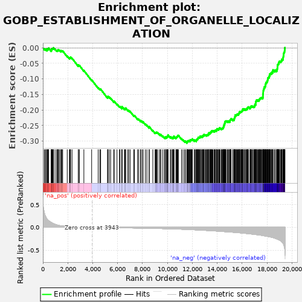
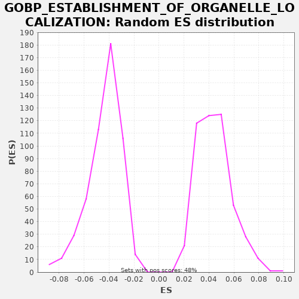

| | | Dataset | X_enriched_genes copy |
| Phenotype | NoPhenotypeAvailable |
| Upregulated in class | na_neg |
| GeneSet | GOBP_ESTABLISHMENT_OF_ORGANELLE_LOCALIZATION |
| Enrichment Score (ES) | -0.306815 |
| Normalized Enrichment Score (NES) | -7.0404034 |
| Nominal p-value | 0.0 |
| FDR q-value | 0.0 |
| FWER p-Value | 0.0 |
Table: GSEA Results Summary

Fig 1: Enrichment plot: GOBP_ESTABLISHMENT_OF_ORGANELLE_LOCALIZATION
Profile of the Running ES Score & Positions of GeneSet Members on the Rank Ordered List
| SYMBOL | RANK IN GENE LIST | RANK METRIC SCORE | RUNNING ES | CORE ENRICHMENT | | 1 | RPS15 | 110 | 0.330 | -0.0032 | No |
| 2 | CENPA | 190 | 0.255 | -0.0048 | No |
| 3 | CHMP2A | 239 | 0.231 | -0.0047 | No |
| 4 | TRAPPC6A | 335 | 0.180 | -0.0071 | No |
| 5 | RAN | 342 | 0.177 | -0.0048 | No |
| 6 | ACTR10 | 352 | 0.174 | -0.0027 | No |
| 7 | DCTN2 | 425 | 0.154 | -0.0039 | No |
| 8 | MGARP | 449 | 0.150 | -0.0026 | No |
| 9 | CFL1 | 465 | 0.144 | -0.0008 | No |
| 10 | STXBP2 | 666 | 0.108 | -0.0087 | No |
| 11 | CDK5 | 693 | 0.104 | -0.0075 | No |
| 12 | UXT | 696 | 0.103 | -0.0050 | No |
| 13 | NAPA | 700 | 0.103 | -0.0026 | No |
| 14 | UBB | 754 | 0.094 | -0.0028 | No |
| 15 | RAB3A | 792 | 0.089 | -0.0021 | No |
| 16 | PSRC1 | 835 | 0.082 | -0.0018 | No |
| 17 | TLE6 | 843 | 0.082 | 0.0004 | No |
| 18 | EIF6 | 974 | 0.067 | -0.0038 | No |
| 19 | BLOC1S1 | 1106 | 0.054 | -0.0081 | No |
| 20 | LMAN1 | 1167 | 0.049 | -0.0087 | No |
| 21 | TRAPPC5 | 1199 | 0.047 | -0.0077 | No |
| 22 | NPM1 | 1217 | 0.045 | -0.0060 | No |
| 23 | RMDN1 | 1263 | 0.043 | -0.0058 | No |
| 24 | TRAPPC4 | 1349 | 0.038 | -0.0077 | No |
| 25 | KIF3A | 1451 | 0.033 | -0.0104 | No |
| 26 | TRAPPC2L | 1468 | 0.032 | -0.0087 | No |
| 27 | CTSZ | 1537 | 0.029 | -0.0097 | No |
| 28 | OOEP | 1589 | 0.028 | -0.0098 | No |
| 29 | TMED10 | 1956 | 0.019 | -0.0264 | No |
| 30 | UBE2B | 2127 | 0.016 | -0.0327 | No |
| 31 | PINK1 | 2171 | 0.016 | -0.0324 | No |
| 32 | TCIRG1 | 2190 | 0.015 | -0.0308 | No |
| 33 | MILR1 | 2228 | 0.015 | -0.0301 | No |
| 34 | SAR1B | 2343 | 0.013 | -0.0335 | No |
| 35 | TMEM230 | 2842 | 0.008 | -0.0571 | No |
| 36 | PIK3CD | 2854 | 0.008 | -0.0551 | No |
| 37 | CLNK | 2936 | 0.007 | -0.0568 | No |
| 38 | STK25 | 3292 | 0.004 | -0.0728 | No |
| 39 | TRAPPC1 | 3917 | 0.000 | -0.1029 | No |
| 40 | MAPK15 | 4443 | -0.003 | -0.1279 | No |
| 41 | PDCD6 | 4577 | -0.003 | -0.1323 | No |
| 42 | BBS2 | 4640 | -0.004 | -0.1330 | No |
| 43 | BTK | 5190 | -0.006 | -0.1592 | No |
| 44 | TRIM46 | 5216 | -0.007 | -0.1579 | No |
| 45 | SLC2A4 | 5227 | -0.007 | -0.1559 | No |
| 46 | NUDC | 5331 | -0.007 | -0.1587 | No |
| 47 | MYO1A | 5443 | -0.008 | -0.1620 | No |
| 48 | GORASP1 | 5689 | -0.009 | -0.1722 | No |
| 49 | BET1 | 5728 | -0.009 | -0.1716 | No |
| 50 | MYO7B | 5953 | -0.010 | -0.1808 | No |
| 51 | DTNBP1 | 6144 | -0.011 | -0.1882 | No |
| 52 | IL13RA2 | 6202 | -0.011 | -0.1886 | No |
| 53 | CNIH3 | 6345 | -0.012 | -0.1935 | No |
| 54 | KIF22 | 6347 | -0.012 | -0.1910 | No |
| 55 | UNC13D | 6359 | -0.012 | -0.1890 | No |
| 56 | LAT | 6551 | -0.012 | -0.1964 | No |
| 57 | SEC16B | 6563 | -0.012 | -0.1944 | No |
| 58 | MAPT | 6644 | -0.013 | -0.1960 | No |
| 59 | MYO1H | 6650 | -0.013 | -0.1937 | No |
| 60 | KATNB1 | 6819 | -0.014 | -0.1999 | No |
| 61 | TRAPPC3 | 6902 | -0.014 | -0.2017 | No |
| 62 | GRIA1 | 7014 | -0.015 | -0.2049 | No |
| 63 | CDH3 | 7302 | -0.016 | -0.2174 | No |
| 64 | TERB1 | 7361 | -0.016 | -0.2178 | No |
| 65 | CHMP4C | 7607 | -0.017 | -0.2281 | No |
| 66 | SLIT1 | 7681 | -0.018 | -0.2294 | No |
| 67 | MYO1G | 7827 | -0.018 | -0.2344 | No |
| 68 | CCNB1 | 7856 | -0.018 | -0.2333 | No |
| 69 | FES | 7965 | -0.019 | -0.2364 | No |
| 70 | FGR | 8054 | -0.019 | -0.2384 | No |
| 71 | ARF1 | 8233 | -0.020 | -0.2452 | No |
| 72 | NUP62 | 8356 | -0.021 | -0.2490 | No |
| 73 | F8 | 8533 | -0.022 | -0.2557 | No |
| 74 | PIK3CG | 8543 | -0.022 | -0.2535 | No |
| 75 | CLN3 | 8832 | -0.024 | -0.2661 | No |
| 76 | CD300A | 9012 | -0.025 | -0.2729 | No |
| 77 | FGF10 | 9055 | -0.025 | -0.2725 | No |
| 78 | NSFL1C | 9096 | -0.026 | -0.2720 | No |
| 79 | MLH1 | 9133 | -0.026 | -0.2713 | No |
| 80 | FOXF1 | 9200 | -0.026 | -0.2722 | No |
| 81 | CDC42 | 9343 | -0.027 | -0.2771 | No |
| 82 | COPG2 | 9444 | -0.028 | -0.2798 | No |
| 83 | SYK | 9470 | -0.028 | -0.2785 | No |
| 84 | PRKN | 9622 | -0.029 | -0.2838 | No |
| 85 | RRS1 | 9753 | -0.030 | -0.2881 | No |
| 86 | LAT2 | 9823 | -0.031 | -0.2891 | No |
| 87 | AP3M2 | 9827 | -0.031 | -0.2867 | No |
| 88 | MAP4K2 | 9911 | -0.031 | -0.2885 | No |
| 89 | BLOC1S3 | 9928 | -0.032 | -0.2867 | No |
| 90 | GJA1 | 9958 | -0.032 | -0.2857 | No |
| 91 | RAB27B | 10004 | -0.032 | -0.2855 | No |
| 92 | CNIH2 | 10017 | -0.032 | -0.2835 | No |
| 93 | TRAPPC12 | 10039 | -0.032 | -0.2821 | No |
| 94 | BBS7 | 10054 | -0.032 | -0.2802 | No |
| 95 | SLC9A3R1 | 10231 | -0.034 | -0.2869 | No |
| 96 | RAC2 | 10283 | -0.035 | -0.2870 | No |
| 97 | FOLR1 | 10383 | -0.035 | -0.2896 | No |
| 98 | FEZ1 | 10429 | -0.036 | -0.2894 | No |
| 99 | PEF1 | 10447 | -0.036 | -0.2877 | No |
| 100 | TRAPPC9 | 10515 | -0.037 | -0.2886 | No |
| 101 | NEFL | 10520 | -0.037 | -0.2862 | No |
| 102 | COL7A1 | 10526 | -0.037 | -0.2839 | No |
| 103 | MYO7A | 10686 | -0.038 | -0.2897 | No |
| 104 | F5 | 10702 | -0.038 | -0.2879 | No |
| 105 | BORCS5 | 10729 | -0.039 | -0.2867 | No |
| 106 | CHMP2B | 10772 | -0.039 | -0.2863 | No |
| 107 | BLOC1S5 | 10792 | -0.039 | -0.2847 | No |
| 108 | CD84 | 10825 | -0.039 | -0.2838 | No |
| 109 | NOP9 | 10835 | -0.040 | -0.2817 | No |
| 110 | STARD3 | 10881 | -0.040 | -0.2815 | No |
| 111 | TOR1A | 11137 | -0.042 | -0.2923 | No |
| 112 | PLA2G3 | 11258 | -0.043 | -0.2960 | No |
| 113 | MYO5C | 11393 | -0.045 | -0.3005 | No |
| 114 | VAMP8 | 11443 | -0.045 | -0.3005 | No |
| 115 | TESK1 | 11565 | -0.047 | -0.3042 | Yes |
| 116 | SEC13 | 11566 | -0.047 | -0.3017 | Yes |
| 117 | PTGDS | 11611 | -0.047 | -0.3014 | Yes |
| 118 | SUN2 | 11625 | -0.048 | -0.2995 | Yes |
| 119 | KIF3C | 11663 | -0.048 | -0.2989 | Yes |
| 120 | LGALS9 | 11713 | -0.049 | -0.2989 | Yes |
| 121 | MKKS | 11761 | -0.049 | -0.2987 | Yes |
| 122 | TMEM201 | 11830 | -0.050 | -0.2997 | Yes |
| 123 | MYO1F | 11832 | -0.050 | -0.2972 | Yes |
| 124 | CDT1 | 11850 | -0.051 | -0.2955 | Yes |
| 125 | PARD3B | 11910 | -0.051 | -0.2960 | Yes |
| 126 | TFG | 11957 | -0.052 | -0.2959 | Yes |
| 127 | RIPOR1 | 11995 | -0.052 | -0.2952 | Yes |
| 128 | DNM1 | 12003 | -0.053 | -0.2930 | Yes |
| 129 | STARD3NL | 12157 | -0.055 | -0.2985 | Yes |
| 130 | DYNC1I1 | 12170 | -0.055 | -0.2965 | Yes |
| 131 | CEP19 | 12235 | -0.056 | -0.2973 | Yes |
| 132 | AP3S2 | 12318 | -0.057 | -0.2990 | Yes |
| 133 | INSC | 12323 | -0.057 | -0.2967 | Yes |
| 134 | WIPI1 | 12339 | -0.057 | -0.2949 | Yes |
| 135 | GATA2 | 12376 | -0.058 | -0.2942 | Yes |
| 136 | LIN7A | 12416 | -0.058 | -0.2936 | Yes |
| 137 | SYBU | 12441 | -0.059 | -0.2923 | Yes |
| 138 | SNAPIN | 12455 | -0.059 | -0.2904 | Yes |
| 139 | GPSM2 | 12482 | -0.059 | -0.2892 | Yes |
| 140 | NMD3 | 12499 | -0.060 | -0.2875 | Yes |
| 141 | COPG1 | 12552 | -0.060 | -0.2876 | Yes |
| 142 | ARMCX3 | 12600 | -0.061 | -0.2875 | Yes |
| 143 | CHMP4B | 12632 | -0.062 | -0.2866 | Yes |
| 144 | SNAP23 | 12634 | -0.062 | -0.2840 | Yes |
| 145 | PREB | 12713 | -0.063 | -0.2856 | Yes |
| 146 | SPG11 | 12750 | -0.063 | -0.2849 | Yes |
| 147 | SPICE1 | 12812 | -0.064 | -0.2855 | Yes |
| 148 | KIF5A | 12814 | -0.064 | -0.2830 | Yes |
| 149 | NDE1 | 12868 | -0.065 | -0.2832 | Yes |
| 150 | RAB17 | 12876 | -0.065 | -0.2810 | Yes |
| 151 | NR4A3 | 12935 | -0.066 | -0.2814 | Yes |
| 152 | CROCC | 12937 | -0.066 | -0.2789 | Yes |
| 153 | PINX1 | 13014 | -0.067 | -0.2803 | Yes |
| 154 | SEC23A | 13061 | -0.068 | -0.2801 | Yes |
| 155 | SAPCD2 | 13135 | -0.069 | -0.2814 | Yes |
| 156 | VAMP7 | 13153 | -0.069 | -0.2797 | Yes |
| 157 | BLOC1S4 | 13214 | -0.070 | -0.2803 | Yes |
| 158 | PPFIA2 | 13235 | -0.071 | -0.2788 | Yes |
| 159 | LSG1 | 13292 | -0.071 | -0.2791 | Yes |
| 160 | MREG | 13299 | -0.072 | -0.2768 | Yes |
| 161 | CLMN | 13326 | -0.072 | -0.2756 | Yes |
| 162 | EML3 | 13333 | -0.072 | -0.2734 | Yes |
| 163 | TGFA | 13411 | -0.074 | -0.2748 | Yes |
| 164 | ITGA4 | 13425 | -0.074 | -0.2729 | Yes |
| 165 | TMED9 | 13469 | -0.074 | -0.2726 | Yes |
| 166 | TTL | 13485 | -0.075 | -0.2708 | Yes |
| 167 | CHMP7 | 13503 | -0.075 | -0.2691 | Yes |
| 168 | BBS5 | 13554 | -0.076 | -0.2692 | Yes |
| 169 | GEM | 13559 | -0.076 | -0.2668 | Yes |
| 170 | S100A13 | 13607 | -0.077 | -0.2667 | Yes |
| 171 | LRRK2 | 13660 | -0.077 | -0.2669 | Yes |
| 172 | GOSR2 | 13740 | -0.079 | -0.2684 | Yes |
| 173 | TBC1D23 | 13787 | -0.080 | -0.2683 | Yes |
| 174 | MYO5B | 13794 | -0.080 | -0.2660 | Yes |
| 175 | PEX14 | 13836 | -0.081 | -0.2656 | Yes |
| 176 | UBXN2B | 13871 | -0.081 | -0.2648 | Yes |
| 177 | NECTIN2 | 13946 | -0.083 | -0.2661 | Yes |
| 178 | DNM3 | 13963 | -0.083 | -0.2643 | Yes |
| 179 | BICDL2 | 13973 | -0.083 | -0.2622 | Yes |
| 180 | TRAPPC2 | 13981 | -0.083 | -0.2600 | Yes |
| 181 | SNAP29 | 14055 | -0.084 | -0.2613 | Yes |
| 182 | ARL6 | 14118 | -0.086 | -0.2620 | Yes |
| 183 | GAB2 | 14131 | -0.086 | -0.2600 | Yes |
| 184 | NLGN1 | 14157 | -0.086 | -0.2587 | Yes |
| 185 | NTN1 | 14180 | -0.087 | -0.2573 | Yes |
| 186 | KIFC1 | 14243 | -0.089 | -0.2580 | Yes |
| 187 | SAR1A | 14335 | -0.090 | -0.2602 | Yes |
| 188 | LIMK2 | 14378 | -0.091 | -0.2598 | Yes |
| 189 | ATP6AP1 | 14401 | -0.092 | -0.2584 | Yes |
| 190 | LLGL2 | 14450 | -0.093 | -0.2583 | Yes |
| 191 | MCFD2 | 14481 | -0.093 | -0.2573 | Yes |
| 192 | KIFAP3 | 14497 | -0.093 | -0.2555 | Yes |
| 193 | AP3S1 | 14511 | -0.094 | -0.2536 | Yes |
| 194 | TRAPPC6B | 14527 | -0.094 | -0.2518 | Yes |
| 195 | LYN | 14544 | -0.094 | -0.2501 | Yes |
| 196 | CHMP6 | 14549 | -0.095 | -0.2477 | Yes |
| 197 | MISP | 14595 | -0.095 | -0.2475 | Yes |
| 198 | SEC22B | 14596 | -0.095 | -0.2449 | Yes |
| 199 | CSNK1D | 14600 | -0.096 | -0.2425 | Yes |
| 200 | SHROOM2 | 14635 | -0.096 | -0.2417 | Yes |
| 201 | PDPK1 | 14637 | -0.096 | -0.2392 | Yes |
| 202 | BBS4 | 14640 | -0.096 | -0.2367 | Yes |
| 203 | TRAK1 | 14676 | -0.097 | -0.2360 | Yes |
| 204 | MYO1D | 14705 | -0.097 | -0.2349 | Yes |
| 205 | BECN1 | 14800 | -0.099 | -0.2372 | Yes |
| 206 | HMOX1 | 14855 | -0.100 | -0.2375 | Yes |
| 207 | MLPH | 14859 | -0.100 | -0.2351 | Yes |
| 208 | BOD1 | 14936 | -0.102 | -0.2365 | Yes |
| 209 | LAMP1 | 14991 | -0.103 | -0.2367 | Yes |
| 210 | MAP1S | 15035 | -0.104 | -0.2364 | Yes |
| 211 | CHMP5 | 15037 | -0.104 | -0.2339 | Yes |
| 212 | SYNE3 | 15041 | -0.104 | -0.2315 | Yes |
| 213 | KLHL12 | 15074 | -0.105 | -0.2306 | Yes |
| 214 | SPHK2 | 15103 | -0.105 | -0.2295 | Yes |
| 215 | CBL | 15119 | -0.106 | -0.2277 | Yes |
| 216 | CHMP1A | 15254 | -0.108 | -0.2321 | Yes |
| 217 | SPIRE1 | 15268 | -0.109 | -0.2302 | Yes |
| 218 | LTV1 | 15344 | -0.110 | -0.2316 | Yes |
| 219 | KIF1A | 15355 | -0.111 | -0.2295 | Yes |
| 220 | KIT | 15373 | -0.111 | -0.2278 | Yes |
| 221 | BICDL1 | 15386 | -0.111 | -0.2259 | Yes |
| 222 | FHOD1 | 15401 | -0.112 | -0.2241 | Yes |
| 223 | SPRY1 | 15413 | -0.112 | -0.2221 | Yes |
| 224 | FMN2 | 15434 | -0.112 | -0.2205 | Yes |
| 225 | PRKCZ | 15440 | -0.113 | -0.2182 | Yes |
| 226 | SEC24A | 15445 | -0.113 | -0.2158 | Yes |
| 227 | NDEL1 | 15518 | -0.114 | -0.2170 | Yes |
| 228 | RAB27A | 15533 | -0.115 | -0.2152 | Yes |
| 229 | CEP120 | 15577 | -0.116 | -0.2149 | Yes |
| 230 | BLOC1S6 | 15597 | -0.116 | -0.2133 | Yes |
| 231 | SEC24D | 15650 | -0.118 | -0.2135 | Yes |
| 232 | CTSC | 15714 | -0.119 | -0.2142 | Yes |
| 233 | CNIH1 | 15715 | -0.119 | -0.2116 | Yes |
| 234 | WDR11 | 15743 | -0.120 | -0.2104 | Yes |
| 235 | MYO6 | 15771 | -0.121 | -0.2093 | Yes |
| 236 | RIOK2 | 15793 | -0.121 | -0.2078 | Yes |
| 237 | KIF5C | 15796 | -0.121 | -0.2053 | Yes |
| 238 | MAD2L1 | 15859 | -0.122 | -0.2060 | Yes |
| 239 | PDCD10 | 15897 | -0.123 | -0.2054 | Yes |
| 240 | RHOT1 | 15932 | -0.124 | -0.2046 | Yes |
| 241 | IKBKG | 15971 | -0.125 | -0.2040 | Yes |
| 242 | PPP6C | 15999 | -0.126 | -0.2028 | Yes |
| 243 | AP3M1 | 16018 | -0.126 | -0.2012 | Yes |
| 244 | KIF1C | 16026 | -0.127 | -0.1990 | Yes |
| 245 | FER | 16050 | -0.127 | -0.1976 | Yes |
| 246 | AP3B2 | 16070 | -0.128 | -0.1960 | Yes |
| 247 | PSEN1 | 16159 | -0.130 | -0.1981 | Yes |
| 248 | ACTR3 | 16173 | -0.131 | -0.1962 | Yes |
| 249 | KIF2C | 16253 | -0.133 | -0.1977 | Yes |
| 250 | AP1M2 | 16302 | -0.134 | -0.1977 | Yes |
| 251 | RHOT2 | 16348 | -0.136 | -0.1975 | Yes |
| 252 | RAB11A | 16360 | -0.136 | -0.1955 | Yes |
| 253 | SNAP91 | 16424 | -0.138 | -0.1962 | Yes |
| 254 | VPS4A | 16436 | -0.138 | -0.1942 | Yes |
| 255 | SPIRE2 | 16444 | -0.138 | -0.1920 | Yes |
| 256 | SPAG5 | 16470 | -0.139 | -0.1907 | Yes |
| 257 | CLASP2 | 16507 | -0.140 | -0.1900 | Yes |
| 258 | STXBP1 | 16630 | -0.144 | -0.1939 | Yes |
| 259 | SEC16A | 16659 | -0.145 | -0.1927 | Yes |
| 260 | BICD2 | 16669 | -0.145 | -0.1906 | Yes |
| 261 | FYCO1 | 16703 | -0.146 | -0.1898 | Yes |
| 262 | MAP4 | 16714 | -0.147 | -0.1877 | Yes |
| 263 | ZBED3 | 16781 | -0.149 | -0.1886 | Yes |
| 264 | CHP1 | 16800 | -0.149 | -0.1870 | Yes |
| 265 | SCFD1 | 16878 | -0.152 | -0.1885 | Yes |
| 266 | YKT6 | 16946 | -0.154 | -0.1894 | Yes |
| 267 | MYO19 | 16971 | -0.155 | -0.1881 | Yes |
| 268 | CDC23 | 17015 | -0.156 | -0.1877 | Yes |
| 269 | CDCA8 | 17020 | -0.156 | -0.1854 | Yes |
| 270 | RAB11B | 17027 | -0.157 | -0.1831 | Yes |
| 271 | HTT | 17037 | -0.157 | -0.1810 | Yes |
| 272 | KIF3B | 17102 | -0.160 | -0.1818 | Yes |
| 273 | LLGL1 | 17104 | -0.160 | -0.1793 | Yes |
| 274 | AP3B1 | 17105 | -0.160 | -0.1767 | Yes |
| 275 | STK11 | 17110 | -0.160 | -0.1743 | Yes |
| 276 | TBC1D20 | 17116 | -0.160 | -0.1720 | Yes |
| 277 | DLGAP5 | 17137 | -0.161 | -0.1705 | Yes |
| 278 | TRAK2 | 17144 | -0.161 | -0.1682 | Yes |
| 279 | TMED2 | 17221 | -0.164 | -0.1696 | Yes |
| 280 | SNX4 | 17233 | -0.164 | -0.1676 | Yes |
| 281 | CHAMP1 | 17295 | -0.166 | -0.1682 | Yes |
| 282 | MARK1 | 17360 | -0.169 | -0.1690 | Yes |
| 283 | EXOC4 | 17373 | -0.169 | -0.1671 | Yes |
| 284 | PIBF1 | 17390 | -0.170 | -0.1653 | Yes |
| 285 | PPP6R1 | 17419 | -0.171 | -0.1642 | Yes |
| 286 | MYO1C | 17433 | -0.171 | -0.1623 | Yes |
| 287 | SDAD1 | 17469 | -0.172 | -0.1616 | Yes |
| 288 | SYT11 | 17506 | -0.174 | -0.1609 | Yes |
| 289 | KIF13A | 17542 | -0.175 | -0.1602 | Yes |
| 290 | BLOC1S2 | 17599 | -0.178 | -0.1605 | Yes |
| 291 | ARFGAP3 | 17661 | -0.181 | -0.1611 | Yes |
| 292 | CDCA5 | 17665 | -0.181 | -0.1587 | Yes |
| 293 | SEH1L | 17679 | -0.182 | -0.1568 | Yes |
| 294 | SPAST | 17680 | -0.182 | -0.1543 | Yes |
| 295 | GOSR1 | 17681 | -0.182 | -0.1517 | Yes |
| 296 | CHGA | 17686 | -0.182 | -0.1493 | Yes |
| 297 | SEC24B | 17692 | -0.183 | -0.1470 | Yes |
| 298 | BICD1 | 17696 | -0.183 | -0.1446 | Yes |
| 299 | ESPL1 | 17700 | -0.183 | -0.1422 | Yes |
| 300 | ZW10 | 17702 | -0.183 | -0.1396 | Yes |
| 301 | SYNJ1 | 17708 | -0.184 | -0.1373 | Yes |
| 302 | FBXW11 | 17725 | -0.185 | -0.1356 | Yes |
| 303 | DNM2 | 17740 | -0.185 | -0.1337 | Yes |
| 304 | MIS12 | 17752 | -0.186 | -0.1317 | Yes |
| 305 | MAP2 | 17769 | -0.187 | -0.1300 | Yes |
| 306 | RAB1B | 17785 | -0.188 | -0.1282 | Yes |
| 307 | SYT4 | 17787 | -0.188 | -0.1257 | Yes |
| 308 | MCPH1 | 17843 | -0.190 | -0.1260 | Yes |
| 309 | WASF1 | 17852 | -0.190 | -0.1238 | Yes |
| 310 | FNBP1L | 17871 | -0.191 | -0.1222 | Yes |
| 311 | NEFH | 17876 | -0.191 | -0.1198 | Yes |
| 312 | CENPE | 17885 | -0.192 | -0.1177 | Yes |
| 313 | SEC23IP | 17900 | -0.193 | -0.1158 | Yes |
| 314 | WASL | 17907 | -0.193 | -0.1136 | Yes |
| 315 | FAM83D | 17927 | -0.194 | -0.1120 | Yes |
| 316 | PLK1 | 17945 | -0.195 | -0.1103 | Yes |
| 317 | GBF1 | 17995 | -0.197 | -0.1103 | Yes |
| 318 | OPA1 | 18007 | -0.198 | -0.1083 | Yes |
| 319 | PARD3 | 18009 | -0.198 | -0.1058 | Yes |
| 320 | TRAPPC10 | 18047 | -0.200 | -0.1051 | Yes |
| 321 | NUP88 | 18053 | -0.201 | -0.1028 | Yes |
| 322 | USO1 | 18060 | -0.201 | -0.1006 | Yes |
| 323 | RAB6A | 18068 | -0.201 | -0.0983 | Yes |
| 324 | SEC24C | 18077 | -0.202 | -0.0962 | Yes |
| 325 | EZR | 18111 | -0.203 | -0.0953 | Yes |
| 326 | SPRY2 | 18161 | -0.206 | -0.0953 | Yes |
| 327 | ARFGAP2 | 18165 | -0.206 | -0.0929 | Yes |
| 328 | DLG1 | 18177 | -0.207 | -0.0909 | Yes |
| 329 | AP3D1 | 18209 | -0.209 | -0.0900 | Yes |
| 330 | MAD1L1 | 18221 | -0.209 | -0.0880 | Yes |
| 331 | ARHGAP21 | 18223 | -0.209 | -0.0854 | Yes |
| 332 | KIF5B | 18233 | -0.210 | -0.0833 | Yes |
| 333 | AP1AR | 18288 | -0.214 | -0.0836 | Yes |
| 334 | HAP1 | 18296 | -0.214 | -0.0814 | Yes |
| 335 | RAB1A | 18366 | -0.218 | -0.0824 | Yes |
| 336 | CENPQ | 18380 | -0.219 | -0.0805 | Yes |
| 337 | TANC2 | 18383 | -0.219 | -0.0780 | Yes |
| 338 | CEP83 | 18458 | -0.225 | -0.0794 | Yes |
| 339 | MAP1B | 18460 | -0.225 | -0.0768 | Yes |
| 340 | GOLGA2 | 18473 | -0.225 | -0.0749 | Yes |
| 341 | CCDC186 | 18479 | -0.226 | -0.0726 | Yes |
| 342 | CLASP1 | 18488 | -0.227 | -0.0704 | Yes |
| 343 | DCTN1 | 18623 | -0.237 | -0.0749 | Yes |
| 344 | NUSAP1 | 18638 | -0.239 | -0.0730 | Yes |
| 345 | FAM91A1 | 18653 | -0.241 | -0.0712 | Yes |
| 346 | PPP6R3 | 18764 | -0.252 | -0.0744 | Yes |
| 347 | ANKRD28 | 18786 | -0.255 | -0.0729 | Yes |
| 348 | SYNE2 | 18798 | -0.256 | -0.0709 | Yes |
| 349 | DYNC1H1 | 18810 | -0.259 | -0.0689 | Yes |
| 350 | PICALM | 18823 | -0.260 | -0.0669 | Yes |
| 351 | DOCK7 | 18834 | -0.261 | -0.0649 | Yes |
| 352 | NDC80 | 18836 | -0.262 | -0.0624 | Yes |
| 353 | CPLX2 | 18843 | -0.262 | -0.0601 | Yes |
| 354 | MYO5A | 18854 | -0.263 | -0.0580 | Yes |
| 355 | ATM | 18858 | -0.264 | -0.0556 | Yes |
| 356 | KIF14 | 18865 | -0.264 | -0.0534 | Yes |
| 357 | NUF2 | 18898 | -0.267 | -0.0525 | Yes |
| 358 | NSF | 18926 | -0.270 | -0.0513 | Yes |
| 359 | VPS4B | 18949 | -0.273 | -0.0499 | Yes |
| 360 | MYO1B | 18954 | -0.273 | -0.0475 | Yes |
| 361 | EML4 | 18964 | -0.275 | -0.0454 | Yes |
| 362 | AURKB | 19000 | -0.279 | -0.0447 | Yes |
| 363 | KIF18A | 19010 | -0.281 | -0.0426 | Yes |
| 364 | ACTR2 | 19102 | -0.297 | -0.0448 | Yes |
| 365 | CDK5RAP2 | 19124 | -0.301 | -0.0433 | Yes |
| 366 | ITGB1 | 19152 | -0.306 | -0.0421 | Yes |
| 367 | SEC31A | 19181 | -0.314 | -0.0410 | Yes |
| 368 | LRPPRC | 19190 | -0.317 | -0.0389 | Yes |
| 369 | AREG | 19194 | -0.317 | -0.0364 | Yes |
| 370 | PCM1 | 19266 | -0.341 | -0.0376 | Yes |
| 371 | HOOK3 | 19282 | -0.347 | -0.0358 | Yes |
| 372 | KIF1B | 19295 | -0.351 | -0.0338 | Yes |
| 373 | HIF1A | 19296 | -0.351 | -0.0313 | Yes |
| 374 | MYO1E | 19307 | -0.356 | -0.0292 | Yes |
| 375 | SPDL1 | 19312 | -0.358 | -0.0268 | Yes |
| 376 | CUL3 | 19329 | -0.369 | -0.0251 | Yes |
| 377 | TRIP11 | 19339 | -0.376 | -0.0230 | Yes |
| 378 | NUMA1 | 19342 | -0.378 | -0.0205 | Yes |
| 379 | XPO1 | 19350 | -0.383 | -0.0183 | Yes |
| 380 | CENPF | 19355 | -0.386 | -0.0160 | Yes |
| 381 | KPNB1 | 19380 | -0.412 | -0.0146 | Yes |
| 382 | MYH9 | 19401 | -0.439 | -0.0131 | Yes |
| 383 | ACTN4 | 19409 | -0.449 | -0.0109 | Yes |
| 384 | ABCE1 | 19415 | -0.458 | -0.0086 | Yes |
| 385 | YWHAZ | 19421 | -0.466 | -0.0063 | Yes |
| 386 | PAFAH1B1 | 19425 | -0.474 | -0.0038 | Yes |
| 387 | INCENP | 19436 | -0.504 | -0.0018 | Yes |
| 388 | HNRNPU | 19439 | -0.516 | 0.0007 | Yes |
Table: GSEA details [plain text format]

Fig 2: GOBP_ESTABLISHMENT_OF_ORGANELLE_LOCALIZATION: Random ES distribution
Gene set null distribution of ES for GOBP_ESTABLISHMENT_OF_ORGANELLE_LOCALIZATION